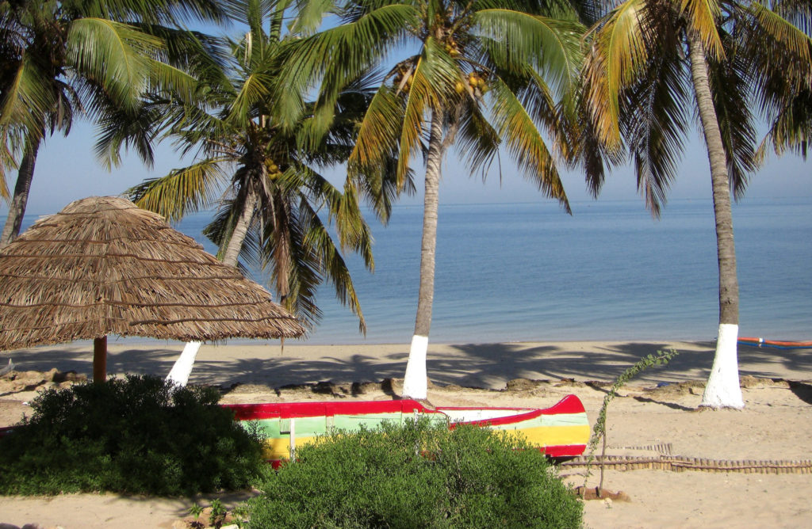

Le village d’Anakao se situe au sud de Tuléar et se trouve dans une zone protégée ayant un charme particulier. A l’extrême sud de l’île Anakao vous procurera un sentiment de bout du monde, avec ses plages désertes.
 Une population des plus surprenantes
Anakao, un village authentique
C’est un petit village typique du sud-ouest de Madagascar peuplé de pêcheurs vezo sédentaires cohabitant avec les Tanalana, qui sont des éleveurs et agriculteurs, ce qui est complémentaire avec les vezo qui eux sont des pêcheurs. Ces deux ethnies respectent des coutumes ayant traversé le temps et qui sont très présentes dans leur quotidien (fady, rites funéraires…). Ce village reste sous une influence forte des croyances bien que l’influence du tourisme s’y soit dévéloppée de façon progressive depuis une vingtaine d’années. Vous serez émerveillé par la beauté des paysages. Des plages de sables blanc où d’un côté nous avons des dunes à la flore endémique et de l’autre côté un lagon aux eaux incroyablement transparentes.
Quelles sont les activités que l'on peut pratiquer à Anakao ?
Anakao est un village tourné autour des plaisirs de la mer. L’activité par excellence sera la pêche, notamment aux côtés des locaux, experts en la matière. Néanmoins, Anakao offre une panoplie d’activités : snorkelling, surf ou tout simplement farniente à l’ombre d’un cocotier.
>
Un incontournable village de pêcheurs
Anakao est régi principalement par les activités que sont la pêche, l’élevage et le tourisme. Les Vezo sont réputés pour être des pêcheurs, et s’attèle à la tâche à bord de leurs traditionnels pirogues à balancier. Outre l’exploitation de la mer, les locaux vivent également de l’évelage, vous rencontrerez ainsi des troupeaux de zébus, chèvres et moutons lors de vos sorties. Touristiquement parlant, c’est un village très accueillant dont l’art de recevoir n’a d’égal que la beauté du village en lui même.